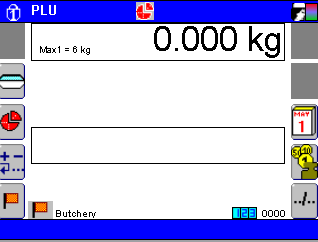
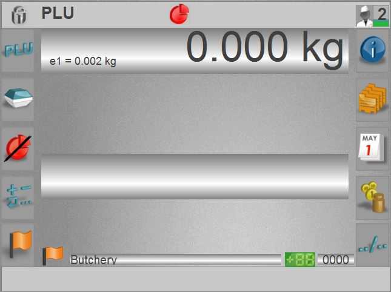
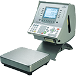
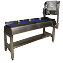
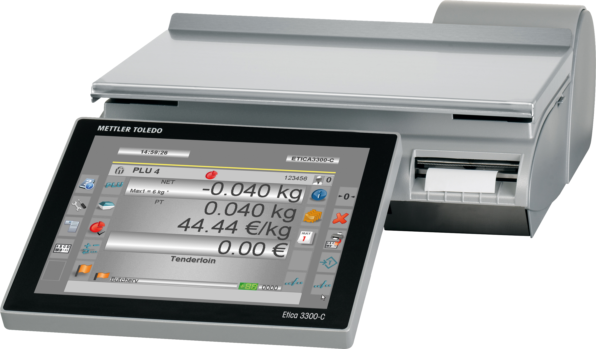

A Propos de moi et de ce site.
A Propos de moi.
Je m'appelle Stéphane Mouron.
Je suis passionné par l'informatique depuis les années 80.
J'ai commencé avec un Amstrad CPC 6128 et son langage de programmation le Basic.
J'ai eu également la chance de connaître les premiers IBM Personal Computer et son fonctionnement avec uniquement des commandes DOS.


Depuis, je n'ai pas vraiment arrêté mais à l'époque, les conseillés d'orientation scolaire, ne voyaient pas l'informatique comme un métier d'avenir, donc j'ai fait mes études dans un autre domaine.
Durant ma carrière, j'ai eu la chance de pouvoir intégrer un bureau d'étude comme testeur.
Le produit était un logiciel qui était intégré dans une gamme de produit professionnel à destination du commerce.
Mes principales fonctions étaient de faire des tests fonctionnels et de non régression. Mais également à la rechercher de bug suite à des remontés terrains.
Le produit est sur base Pc avec Windows comme OS. La version premier prix est avec Windows CE. Les versions plus évoluées sont en version Windows XP, Windows Wepos ou PosReady. Puis en version Windows 7 pour la toute dernière génération.





Je testais également divers outils informatiques qui étaient à destination des techniciens et intégrateurs.
De 2011 à 2015, par défis avec moi et sous le statut d'auto-entrepreneur, j'ai créé et géré une boutique en ligne. Le site internet était avec la solution Prestashop et herbegée chez Infomaniak.
Cela a été une très bonne école mais c'était en plus de mon activité principale. Je n'avais pas assez de temps pour m'y consacrer correctement.